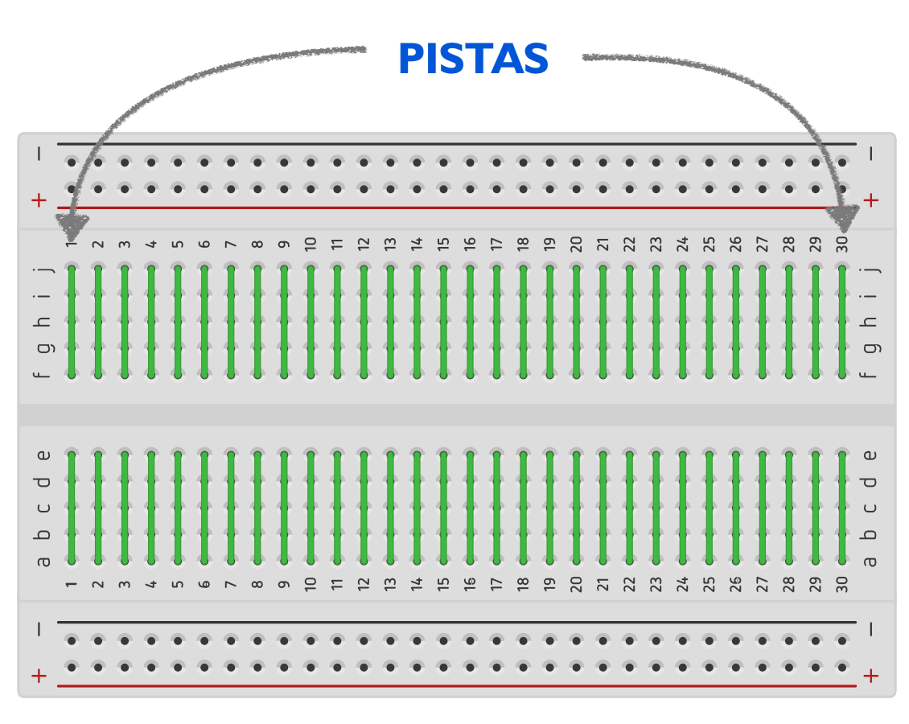

Al inicio de mi recorrido en el taller, se me hacía difícil trabajar en una tablilla de pruebas, ya que solía confundirme constantemente al interpretar los diagramas y pasarlos a la tablilla. Sin embargo, no te desesperes. Aquí te explicaré cómo funciona una tablilla de pruebas y cómo usarla correctamente paso a paso.
Una tablilla de pruebas (o protoboard) es una herramienta que permite conectar componentes electrónicos de forma temporal sin necesidad de soldar. Está compuesta por filas y columnas de agujeros conectados internamente. Las filas horizontales de las bandas laterales se utilizan para la alimentación (positivo y negativo), mientras que las columnas verticales en el centro se conectan entre sí en grupos de cinco agujeros. En la siguiente imagen se mostrará cómo funcionan las filas y columnas de las tablillas de pruebas para ayudarte a comprender mejor su estructura interna.
Tiene una estructura interna diseñada para facilitar la conexión temporal de componentes electrónicos sin necesidad de soldar. Está dividida en varias secciones: las bandas laterales horizontales, llamadas líneas de alimentación, se utilizan para distribuir energía a todo el circuito; estas bandas están conectadas internamente a lo largo de toda su fila (positivo y negativo en filas separadas). En el área central, las conexiones se agrupan en columnas verticales de cinco agujeros cada una, donde cada grupo está conectado internamente, pero no con otras columnas adyacentes. Esta área se divide por un canal central que generalmente sirve para insertar circuitos integrados, dejando las patas de estos separadas en columnas opuestas. La estructura interna permite organizar los componentes y conexiones de manera ordenada y flexible, lo que facilita el diseño y prueba de circuitos electrónicos.
Con práctica y paciencia, lograrás armar circuitos con facilidad y precisión.